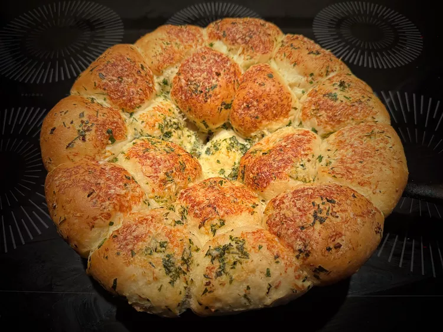

Home
Herby Garlic Skillet Dinner Rolls

Description
These herby garlic skillet dinner rolls are dressed-up frozen dinner roll dough, baked with a buttery garlic and herb coating, and topped with a little grated Parmesan cheese. Your guests will love them!
Ingredients
- 1/2 cup unsalted butter, melted, plus more for skillet
- 1 generous pinch kosher salt, or to taste
- 2 cloves garlic, finely minced
- 2 tablespoons finely minced flat-leaf parsley
- 1 tablespoon finely minced fresh rosemary
- 18 frozen dinner roll dough balls, thawed but still firm
- 1 tablespoon grated Parmesan cheese
Steps
- Brush a 10-inch cast iron skillet with melted butter. Combine remaining melted butter, salt, garlic, flat-leaf parsley, and rosemary in a large mixing bowl.
- Place thawed dough balls into the butter and herb mixture and coat each dough ball thoroughly. Place coated dough balls in the prepared skillet. Reserve any remaining butter-herb mixture.
- Lightly brush a piece of plastic wrap with melted butter, and cover rolls, with buttered side toward rolls. Set in a warm place, without drafts until doubled in size, 2 to 3 hours.
- Preheat the oven to 375 degrees F (190 degrees C).
- Gently remove plastic wrap. Melt remaining herb butter in the microwave, if necessary, and pour over the top of the rolls. Sprinkle with Parmesan cheese.
- Bake rolls in the preheated oven until lightly browned, 15 to 20 minutes. Remove from the oven and cool in the pan for 3 to 5 minutes. Serve warm.